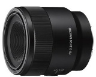
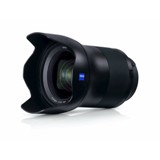

Если вам нравится делать фотографии и снимать видеоролики, то системная камера Sony Alpha ILCE-5100 16-50 mm со сменными объективами создана исключительно для вас. Параметры баланса белого и автоматический фокус позволят вам работать даже в условиях слабого освещения. Делайте целые серии снимков в количестве до 400 фотографий. Записывайте данные с фотоаппарата на MSDuo и SDXC с объемом хранилища до 64 Гб, копируйте файлы изображений форматов JPEG и RAW или видео AVCHD на ПК и просматривайте их на экране вашего ЖК телевизора. Все, что вам потребуется, – шнур USB или HDMI. Для беспроводного подключения используйте NFC. Sony Alpha ILCE-5100 гарантирует непревзойденное качество фотографических снимков и кинороликов.
| Цвет | Черный |
| Материал | Пластик |
| Тип матрицы | CMOS |
| Макросъемка | Есть |
| Серийная сьемка | Есть |
| Авто очистка матрицы | Нет |
Запись видео в формате Full HD. Нажмите кнопку MOVIE и снимайте четкое видео без визуальных шумов. Можно выбрать один из доступных форматов: 60p, 60i и 24p. Снимайте четко с помощью системы быстрой гибридной автофокусировки. Усовершенствованные функции определения фазы и оценки контраста позволяют фокусироваться за 0,07 секунд. Режим серийной съемки со скоростью 6 кадров в секунду и замечательная функция следящего автофокуса позволяет по максимуму использовать возможности автофокусировки с 179 точками определения фазы. Даже когда вы снимаете человека, когда он отвернулся от камеры, а глубина резкости небольшая, функция автофокусировки по глазам обеспечит правильный фокус на лице.Поворотный ЖК-экран с углом наклона 180°, чтобы можно было снимать с любого угла, сверху и снизу.Удаленное управление в одно касание позволяет использовать смартфон или планшет в качестве видоискателя или пульта дистанционного управления для цифровой камеры. А обмен контентом в одно касание позволяет передавать фотографии и видео с камеры.

Байонет Е, формат APS-C
Компактный объектив G со стандартным зумом и апертурой f/2.8 для камер с матрицами APS-C
Высокое разрешение во всем диапазоне фокусных расстояний даже с апертурой f/2.8
Настраиваемая кнопка удержания фокусировки, переключатель АФ/РФ и ручная фокусировка
На фронтальный элемент объектива нанесено фтористое покрытие, отталкивающее воду и грязь.
Объектив пыле- и влагозащищен2 — его можно уверенно использовать при съемке на улице.
Цена: от 49 990 руб.

Широкоугольный зум-объектив. Знаменитое качество и контрастность ZEISS
Камеры формата APS-C с байонетом E
Широкоугольная перспектива на всем диапазоне фокусных расстояний
Оптический стабилизатор Optical SteadyShot компенсирует дрожания камеры
Постоянная максимальная светосила f/4
Минимальная дистанция фокусировки 30 см подходит для съемки цветов и других типов предметной съемки
Все права защищены